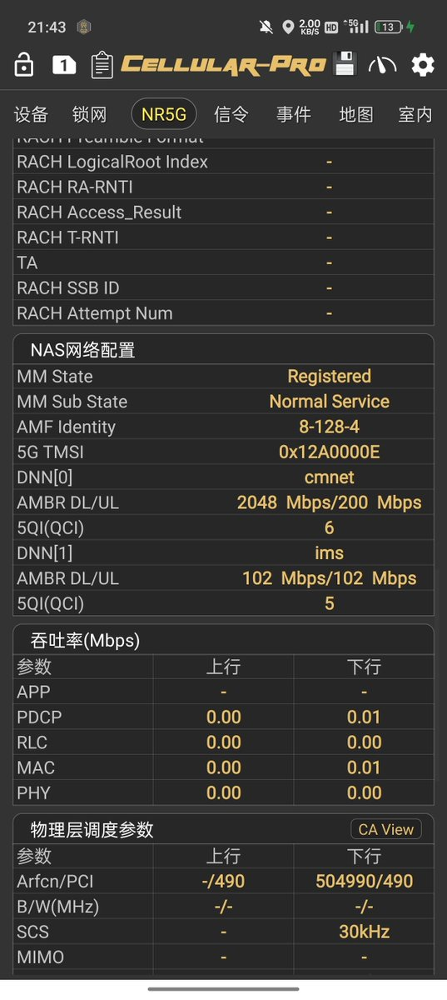

这阵子用的最爽的还得是西藏移动29元940G哑巴，为啥叫哑巴呢？没有通话功能，一开始短信也发不了不过可以开😳去年3月我上车，好多人嫌弃短期的、就没上，现在续了两年（2028-01-01）
昨天直接让在线客服加上5GSA极速服务，不用接短信在线直接开，开完极速QCI来到6，签约速率2048mbps/200mbps。
资费是每月29元，基础40G流量还有一个-9的100G流量包，优先使用40G的基础流量，开始用后会加一个-1的100g流量包，等-1的100g用完再送-2，100g流量依次叠加总共940g。
坑的地方在于用完到叠加送100G流量会有延时，如果猛刷流量，把-9的预备100G流量都用完了还没叠加上100g那就话费直连了。
一般正常使用没得问题，因为-9 100g流量就是来给系统延时缓冲的。
昨天直接让在线客服加上5GSA极速服务，不用接短信在线直接开，开完极速QCI来到6，签约速率2048mbps/200mbps。
资费是每月29元，基础40G流量还有一个-9的100G流量包，优先使用40G的基础流量，开始用后会加一个-1的100g流量包，等-1的100g用完再送-2，100g流量依次叠加总共940g。
坑的地方在于用完到叠加送100G流量会有延时，如果猛刷流量，把-9的预备100G流量都用完了还没叠加上100g那就话费直连了。
一般正常使用没得问题，因为-9 100g流量就是来给系统延时缓冲的。
